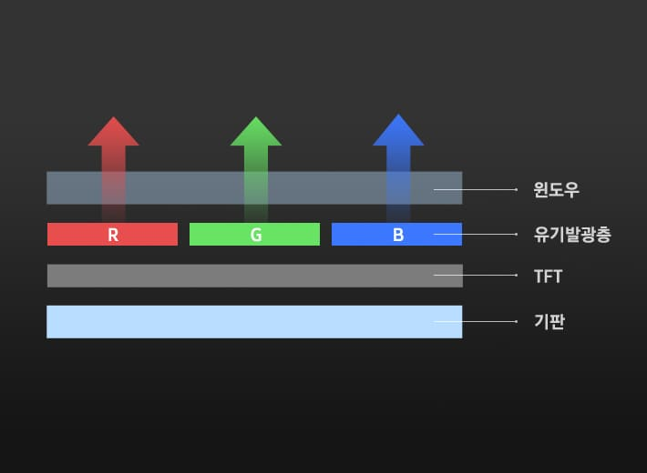

OLED Display
삼성의 OLED 디스플레이는 선명한 화질과 슬림한 디자인, 낮은 소비전력 등 다양한 혁신 기술을 통해
글로벌 중소형 디스플레이 시장을 선도하고 있습니다.
What is OLED?
OLED디스플레이의 구조와 원리

OLED(Organic Light Emitting Diodes) 디스플레이는
전류가 흐르면 스스로 빛을 내는 유기물질을 이용한 ‘자발광형 디스플레이’입니다.
백라이트 광원을 활용해 액정과 컬러필터를 거쳐 색을 표현하는 LCD와 달리
OLED는 유기발광층에 전류를 가했을 때이에 반응하는 빛의 3원색인 RGB 발광물질을 통해 색을 표현합니다.
픽셀 하나하나가 자체적으로 빛을 내기 때문에 화질,두께, 소비전력 측면에서
매우 우수할 뿐 아니라,유연하게 구부리고 접을 수 있어 다양한 어플리케이션에 활용할 수 있습니다.
Why 삼성 OLED™?
압도적인 화질

삼성 OLED™는 스스로 빛을 내는 자발광 특성으로 인해 뛰어난 색재현성을 자랑합니다.
DCI-P3 120%에 해당하는 넓은 색재현력을 갖춰, 다양한 컬러를 실물처럼 생생하게 표현합니다.
또한 1,500cd/㎡ 이상의 높은 밝기와 낮은 반사율로 햇빛이 강한 야외에서도 또렷하고 선명한 화질을 볼 수 있어 실내외
관계없이 어느 곳에서든 효과적으로 콘텐츠를 감상할 수 있습니다.
*DCI-P3 : 디지털 영상 시대에 맞는 색영역으로 기존 sRGB보다 25% 넓은 색역표현이 가능
삼성 OLED™는 0.0005nit 미만의 ‘리얼 블랙(Real Black)’을 구현하기 때문에 명암비가 무한대에 가깝습니다.
명암비는 디스플레이의 최대 휘도(화이트)와 최소 휘도(블랙) 차이를 수치로 표현한 것으로,
밝고 어두움의 정도를 세세히 표현할 수 있는 만큼 화질을 좌우하는 중요한 요소입니다.
삼성 OLED™는 1,000,000:1 이상의 명암비로 디테일하면서 보다 깊고 입체감 있는
이미지 표현이 가능해 HDR(High Dynamic Range)을 구현하는데 최적의 디스플레이입니다.